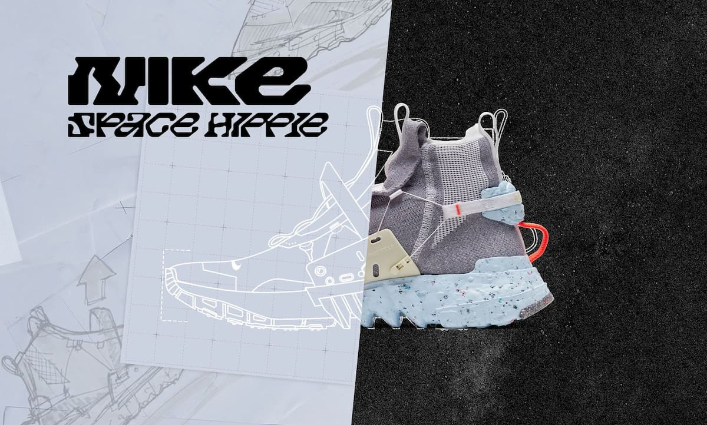
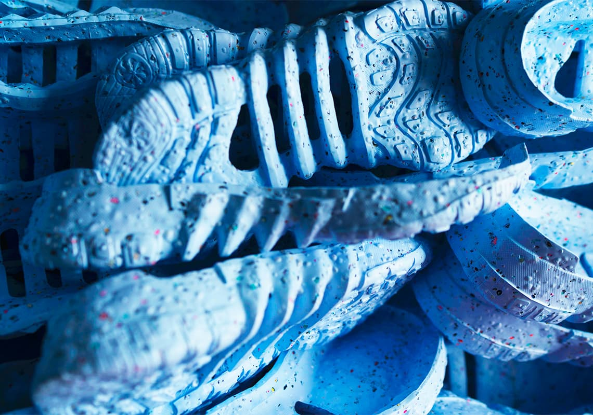

媒體曝光率極高、預計於 6 月 11 日發售的 Space Hippie（太空嬉皮）系列，不論你是不是球鞋控，都必須好好認識這「締造歷史」的球鞋。
Nike 有史以來碳排放最低的鞋：平均一般運動鞋碳排放量為 13.6 公斤，這系列每雙僅 3.7 公斤。 Nike 採用廢棄材料比例最高的鞋：約 50％ 原料來自廢棄材質。
發售前，我們有幸參與中港臺媒體的 Space Hippie 線上發表會，由 Nike 永續負責人也是 Space Hippie 主設計者 Noah Murphy-Reinhertz 親自詳解，大至 Nike 的 Move to Zero 計畫，小至 Space Hippie 身上的每項細節，你想知道的盡在下文。

01. 一切的根源：Move to Zero 計畫
Move to Zero 言簡意賅的解釋：Nike 邁向零碳排放。
我們思考，救地球最直接、具影響力的解決方式， 就是減少碳足跡、碳排放。」— Noah Murphy-Reinhertz
但此舉最主要的目的是希望帶動全球產業的改革，Nike 雖是球鞋、服裝產業中的領導者，但僅有 Nike 自身的改變當然還是不及「整個產業」的改變。氣候危機是全球的挑戰，因此 Nike 的 Move to Zero 實則為一項呼籲性的行動，「改變，必須與全世界聯手。」Noah Murphy-Reinhertz 說道。
With sustainability, we only win if we all win. 「面對永續議題，唯有全世界都贏，我們才算成功。」
因此，「Move to Zero」的宗旨是——「在未來，零碳排放、零浪費的 NIKE 將會是怎樣？」Noah 笑著補充道：「當然，這是一個還沒達成的未來，這也是我們每天邁進的目標。」
02. Noah 加入 Nike：為永續計畫而生的男子
「創新」是永續這條道路上極為重要的一環。
原擔任產品設計師 10 年的 Noah Murphy-Reinhertz，約在 4 年前應 Eric Avar 邀請進 Nike（ Eric Avar 以設計一系列 Kobe Bryant 球鞋聞名），他告訴 Noah，他希望為 Nike 開闢一條邁向「永續」的道路。
Noah 回憶起 2012 年倫敦奧運時，見識到 Nike 首次亮相的 Flyknit Racer，也是 Flyknit 技術的開山之作。從此，他便認定 Nike 不只是商業巨頭，更無疑是不斷創造新技術的團隊，這才是 Noah 認為真正能夠推動品牌走向永續的重要因素。
於是，2016 年他加入 Nike 並開始和 Nike Sport Research Lab 及各個單位合作，並掌管著 Innovation Kitchen 底下以「永續發展」為核心的 Space Kitchen。目前，該團隊最新的成果即為 Space Hippie。
03. Space Hippie 前置構思：找出 Nike 碳排放最低的技術
Noah 解釋：「大概兩年前開始，我們非常精細地計算出 Nike 每項材料、每項製程所產生的碳排放，因此我們很清楚哪雙鞋是 Nike 中碳排放最低的。」當時 Nike 首席設計總監 John Hoke 對他們團隊說，Nike 過往已向永續發展投注這麼多心力（例如 Flyknit 以回收寶特瓶、再生聚酯纖維製成），「你知道 Nike 最好能做到哪，因此你們要做到『更好』。」
於是打造「Nike 史上碳排放最低的鞋」這目標便就此誕生。
04. Space Hippie 命名之由來：到底跟太空什麼關係？
Noah 解釋道：「最初，當我們決定要以回收廢料製鞋時，一開始便把各式 Nike 廠房的殘餘原料全擺在桌上，接著新創設計團隊開始不斷嘗試混合、黏貼各式素材，在這過程中，其中有位設計師說道：『我們這樣不是很像在太空嗎？像電影《絕地救援》（The Martian）一樣，以現有資源種馬鈴薯求生。』」
事實上這正是 NASA 太空計畫「In-Situ Resource Utilization」（ISRU，就地資源利用）的概念，太空人被送往外太空執行任務，凡事只利用座艙有限的資源結合該星球本身的條件，例如土、空氣、岩石等，以創造適合人類生存的型態。而我們，生於地球，資源應也是有限的，不該再無止境的生產，因此這成為我們的設計宗旨—將現有的資源，進化為全新、更具功能性的材料，也因此稱之為「Space Hippie」。
05. Space Hippie 結構
從 Space Hippie 網眼編織而成的鞋面說起，Nike 直接回收使用殘餘纖維，以廢棄的 T Shirt、紗線以及寶特瓶加熱溶解製成「Space Waste Yarn」，這比一般聚酯纖維足足少了 70 ％碳排放量，卻也採用如 Flyknit 般的編織技法打造強韌切富有彈性與高透氣度的鞋面。
鞋墊則以生產 Vaporfly 4% 剩餘的邊角料，及比一般 Nike 泡棉少 50% 的碳排放量重製 ZoomX 泡棉組成。 於是打造「Nike 史上碳排放最低的鞋」這目標便就此誕生
坑狀泡棉中底：用標準 Nike 泡棉和約 15% Nike Grind 橡膠混合製作而成，重量減輕，碳排放量更少，同時 Nike Grind 顆粒賦予了每一雙鞋的中底獨特質感和色彩。（Nike Grind 為 Nike 球鞋生產過程中產生的橡膠、泡綿、纖維、織物等廢料，被分割成顆粒狀的混合體）
style="width:100%"
06. Space Hippie 01-04 各型號之差異
01 低筒
01 便是由最本款的低筒運動鞋為原型，灰色紗線編織鞋面搭載側邊橘色織線 Swoosh 與份量感的藍色泡綿鞋底，底部與 Nike Vaporfly NEXT% 跑鞋採用同款防震材質，即便整雙鞋（重量比）50% 皆為再生材質，可其性能與耐用度皆如常規 Nike 跑鞋。
02 中筒
全鞋組成與配色全如 01，不過鞋型為中高筒，捨棄鞋帶如襪套般的設計，Swoosh 編織也與 01 稍有不同。
03 高筒
03 外型上最大特色即 FastFit 繫帶科技，鞋身兩側附加塑料裁片固定住亮橘色繫帶，令這雙高筒的 03 極具科技感。FastFit 為 Nike 獨創科技，讓運動員能快速調整球鞋包覆性，減少他們在運動中鞋帶或將不斷鬆脫的情形，一拉鞋面的拉繩，便能帶動球鞋內部系統收緊纜線，達成 360 度全方位鎖緊，貼合腳型。
04 女鞋
唯一專為女子設計的運動鞋，再生材質佔該鞋款重量比約 25%，是全系列最輕、碳排放量最低的一款鞋。該款雖所有原料比照 01-03，但鞋面編織技法有所不同，因此表面紋路較明顯、顏色也較為柔和，同時鞋墊並未使用 ZoomX 泡棉。
07. Space Hippie 重點原則
重點一：可活用於其他品項的製程模式
這幾雙鞋款的原料組合（toolkit）全都是一樣的，全採用工程網眼編織而成的鞋面、全是再生材質，但最終製成的樣貌卻不盡相同，這是 Noah 想傳達的 — 永續不該以單一特定形式出現。
例如 Space Hippie 的再生材質並非僅適用於一雙鞋，而是延伸至全系列 4 種不同鞋款中，未來，這材質也將套用於服裝與其他運動品項。因此 Noah 不斷強調，Space Hippie 不是「結果」，而只是 NIKE 計畫的「第一步」而已。
「我們希望打造一種能廣泛應用的『工具包』，而非單一材質、僅適用於單一商品或單一的製造系統。」
重點二：異類般的外觀，將激起你的好奇心
Noah 提到，很多人會問，為何刻意讓 Space Hippie 保留最原始材料？例如灰色織線的顏色源自回收 T 恤紗線本身的顏色，完全沒額外染色；而 Nike Grind 的顆粒廢料也在鞋底清楚顯現。
「這正是我們希望激發的『對話』，許多 NIKE 合作的運動員已關注永續議題甚久，所以每當他們穿著這雙外型奇特的鞋，別人便會主動詢問：『你這雙鞋怎麼長這樣？』『這鞋是發生什麼事了？』藉此，他們便能向更多、更多人解釋鞋子背後的意義；同理，一般人穿上後，也能向你身邊的家人、朋友說明這雙鞋，激起世上更多人對永續的共識與行動。」
「儼然，Space Hippie 不只是一雙球鞋， 更被設計為人與人間真正傳播理念的橋樑。
08. 另外，Noah 也親自解答了以下幾個問題
Q：多數年輕潮流人士只愛 NIKE 的設計師聯名款，這以永續為題的鞋款，能贏得他們關注嗎？
Noah： 「有一點對我們來說很清楚，『永續』從不需要拿來炒作。」 （We don’t have to hype sustainability.） 「我認為，多數年輕消費者已展現其對永續議題的高度熱忱，這項產品完全表達出改變世界、創造未來的理念，我相信他們一定能夠感受到，他們也真心關注永續發展。」 「至於年輕人只喜歡的那些經典款 Air Force 1、Air Jordan 或設計師聯名款，我們也很清楚大家對這些鞋的熱愛，所以我們將持續開發永續科技以應用於更多不同鞋款上，例如回收織料製的 Vapormax 2020；或是研發出合適用於經典鞋款的環保材質，減低它們對環境負擔。」
Q：提到再生材質或永續的產品，多數人第一反應即高成本、高單價，那麼 Space Hippie 定價是否也因此提高呢？
Noah： 「定價確實是非常具挑戰性，我們很努力嘗試讓單價和其他 Flyknit 鞋款相同，以達到高度觸及性（accessibility）。」 「我希望每個人到 Nike 門市都能沒有壓力的購入這雙鞋。」 「除了售價的挑戰，製作面也是充滿困難，它的外觀、製程沒有一樣是過去 Nike 工廠見過的，所以當我們第一次向工廠工程師說明時，這鞋對他們來說就像什麼 B 級、C 級貨一樣，他們一臉就想拒絕我們；對一般設計部門來說也是，Nike 設計師講究每個細節必須完美、每樣產品必須達到品管 100% 相同的外觀。因此我不斷試著說服 Nike 各部門，拜託，這雙鞋有不同之處也是合理的。」

Q：你認為 Space Hippie 在 sneaker head 心中，將會是什麼樣的存在？
Noah：「其實在發表前幾個月，我們曾拿鞋給洛杉磯、紐約一些高端選貨店的買手們檢視，當時我幾乎無法想像那類球鞋人士會如何評價這雙鞋，但他們馬上回饋許多關於銷售的想法，例如 Bodega（波士頓的知名球鞋店舖）提到，應該讓消費者拿一雙他們的舊鞋來回收，才有資格購買 Space Hippie。」 「我認為，真正的 sneaker head 之所以想擁有一雙鞋，是因為一雙具有故事性、足以代表你是誰的鞋，因此他們比一般人更講究產品的細節與背後的故事，而 Space Hippie 有的正是其獨特的故事，以及象徵球鞋歷史上的新篇章。」